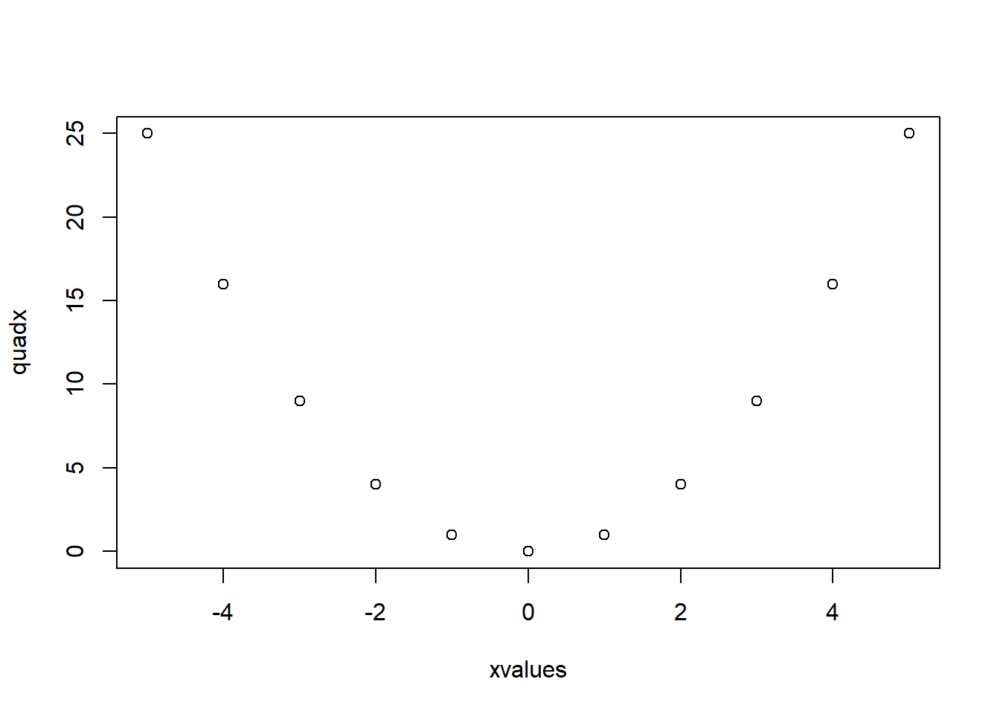
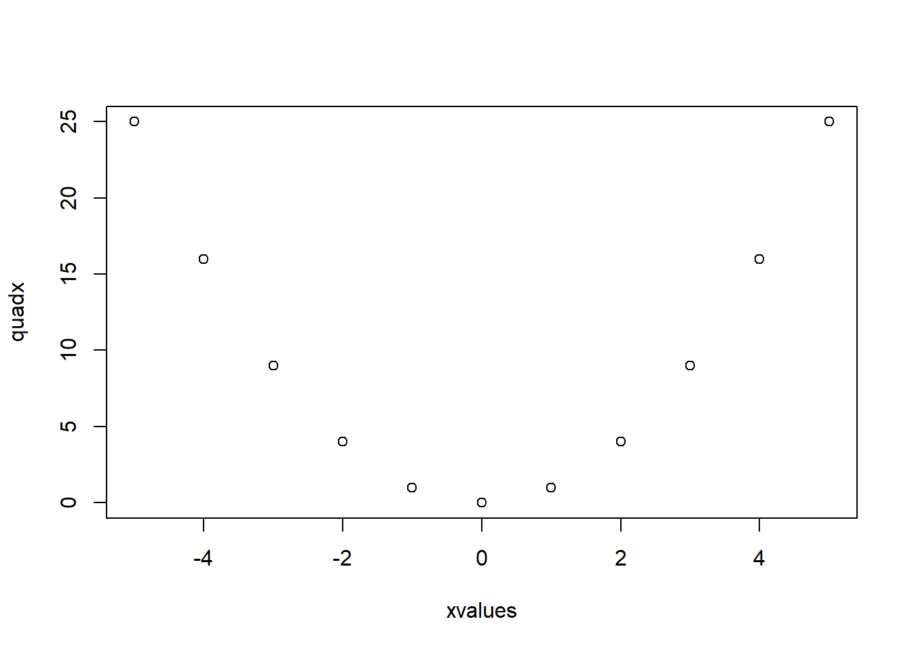
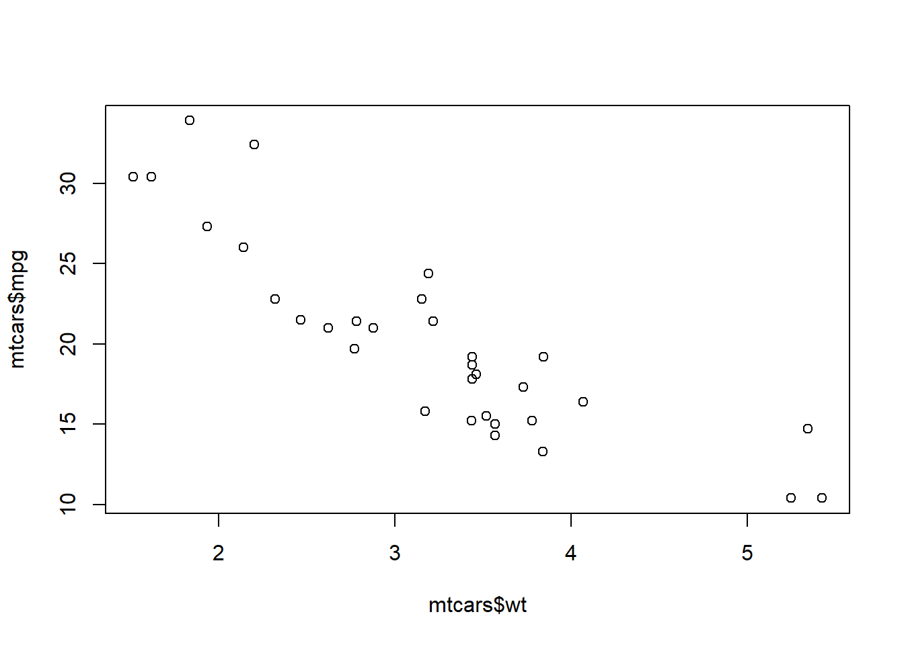

![]()
xvalues <- -5:5
quadx <- xvalues^2
plot(xvalues,quadx, type="p")
Software, Statistics, R, Teaching, RMT1005, Graphs
The ability to represent data graphically is an important part of data analysis because:
At the start of an analysis, investigating the data visually helps you to get to know the data that you will be working with: identify data errors or outliers; suggest structures that may be present in the data.
As part of the analysis, graphs can be used to check assumptions and to interpret results.
If constructed carefully, graphics often provide powerful means of communicating information to other people in informal discussions, presentations or written reports.
R has a wide range of plotting capabilities and the graphics can be customised extensively. We will cover the basics, including enhancing plots by adding additional graphics and text, and using parameters to customise your graphics. You should work through the examples and exercises given in these note, and you are encouraged to try out variations to the given commands to see how these affect the results. You may also read more about the functions in the help pages by typing help(name.of.function) or help.start() to browse the available functions. Start R and then use setwd() or File --> Change dir to change the working directory for your R work. It is helpful to type your commands into a script window and run them using Ctrl-R. At the end of the sessions, you may save your commands for future reference. Open a new script window (File --> New script) and be ready to start.
plot() functionIn R, there is a function plot() which, in its simple form, accepts as arguments the \(x\)- and \(y\)- axis, and opens a graphics device showing a scatter plot. For instance, define two vectors called xvalues and quadx and then produce a scatter plot.
xvalues <- -5:5
quadx <- xvalues^2
plot(xvalues,quadx, type="p")
The argument type="p" specifies that “points” should be plotted (the default). The other values that the type argument can take are: "l" for lines, "b" for points and lines, "s" for stepped, "h" for hi-density (vertical lines from the x-axis to the points), and "n" for none (only plot the axes).
Repeat the plot command with different settings for type.
The object quadx is used as an example. Try plotting different functions such as exp(xvalues), abs(xvalues), and sin(xvalues).
Try to plot log(xvalues) against xvalues, what happens? Change the vector xvalues to get a sensible plot.
Notice that every time you enter a plot command, the graphics window is cleared and a new graphic is drawn, as opposed to adding to or changing the existing plot. This is because plot is a high-level graphics command, as opposed to a low-level command which is used to add things to an existing graph. We will explore some other high-level commands.
Bar charts can be obtained for univariate or multivariate data, with the argument supplied being a vector of the heights or the frequencies for each bar. Load in the data VADeaths, quickly read the help file, and plot some bar charts.
data(VADeaths)
help(VADeaths)
VADeaths[1,] Rural Male Rural Female Urban Male Urban Female
11.7 8.7 15.4 8.4 barplot(VADeaths[1,])VADeaths Rural Male Rural Female Urban Male Urban Female
50-54 11.7 8.7 15.4 8.4
55-59 18.1 11.7 24.3 13.6
60-64 26.9 20.3 37.0 19.3
65-69 41.0 30.9 54.6 35.1
70-74 66.0 54.3 71.1 50.0barplot(VADeaths)barplot(VADeaths,beside = TRUE)t(VADeaths) 50-54 55-59 60-64 65-69 70-74
Rural Male 11.7 18.1 26.9 41.0 66.0
Rural Female 8.7 11.7 20.3 30.9 54.3
Urban Male 15.4 24.3 37.0 54.6 71.1
Urban Female 8.4 13.6 19.3 35.1 50.0barplot(t(VADeaths))The function t() transposes a matrix.
Histograms are used to show frequency distributions of continuous variables. The R command hist accepts as its first argument a numeric vector containing the individual observations. The function rnorm() generates a sample of random numbers from a standard normal distribution. To obtain ten of such numbers type
rnorm(10) [1] 1.08716744 -0.19157200 -0.23018842 -1.36496537 -1.88309166 -0.05321759
[7] 0.28178920 -0.02726717 0.67255752 0.44063260Type in the same thing again, you will notice that the numbers are different each time. Now use this function to plot a histogram of \(1000\) standard normal observations.
hist(rnorm(1000))Notice that here the rnorm() command is nested within the hist command. By doing so, R will work from the inside out by evaluating first the inner expression rnorm(1000), then passing the result as an argument to the hist command. Multiple layers of nesting can be used, which may be helpful to save you from storing lots of objects that are not needed. However, excessive nesting can make your code difficult to read, so use your judgement! You can specify a different mean and standard deviation to rnorm using the arguments mean= and sd=; play about with these arguments and see how the histograms change. Now try
hist(rexp(1000,4))What do you think the histogram shows? Experiment with the arguments breaks=n, where n is a number of your choice, and prob=TRUE, observing how the resulting histograms differ.
A more sophisticated version of a histogram is a kernel density estimate, which can be thought as a smoothed histogram. The density command calculates a kernel density estimate, which is recognised by the plot command, and produces the appropriate type of plot automatically.
y <- rnorm(50)
plot(density(y))
rug(y)What did the last command do?
A boxplot is used to compare a numeric variable across several groups. The exact format of a boxplot differs between packages. In R, the box is defined by the lower quartile, median and upper quartile, while the whiskers extend to the data point that is no more then \(1.5\) times the interquartile range from the box. Any observation outside the whiskers is defined as an extreme value and is plotted individually.
data(OrchardSprays)
help(OrchardSprays)
boxplot(decrease ~ treatment, data = OrchardSprays)boxplot(decrease ~ treatment, data = OrchardSprays, horizontal = TRUE)boxplot(decrease ~ treatment, data = OrchardSprays,
log="y", col="bisque")Notice the notation: decrease ~ treatment, which is an R model formula, and is read as decrease depends on treatment using the data OrchardSprays.
A quantile plot allows the visual assessment of how well a continuous variable fits a known distribution. A bivariate Q-Q plot compares the distribution of two sets of data:
qqnorm(x) plots the ordered values of x against quantiles of a normal distribution, using the sample mean and variance of x.
qqplot(x) plots the ordered values of y against the ordered values of x, where x may contain the quantiles of a known distribution, or another data set.
In both cases the ideal plot will be a diagonal straight line.
qqnorm(OrchardSprays$decrease)qqnorm(log(OrchardSprays$decrease))Let’s now see whether an exponential distribution can be used to model these data. We may estimate the parameter of said distribution by typing
lambda <- 1 / mean(OrchardSprays$decrease)
lambda[1] 0.02201582From the data, we can estimate \(n\) quantiles simply putting the observations into ascending order. To compare with the exponential distribution we need to find the appropriate quantiles of that distribution. If \(X \sim \text{Exp}(\lambda)\), then the \(p_i\)-th quantile satisfies:
\[ P(X \leq q_i) = p_i, \;\;\; i=1,\ldots, n. \]
The question is now what values of \(p_i\) are required? We are going to compare with the quantiles from the data, so it seems reasonable to take values of \(p_i\) that are equally spaced between \(0\) and \(1\). The function ppoints(n) returns a vector with appropriate probability points such that \(p_i=(i-\frac{1}{2})/(n+\frac{1}{2}))\). Notice the offset of \(1/2\) in both the numerator and denominator. This is required because without it \(p_n=1\). The value of \(1/2\) can be changed if desired. The quantiles of the exponential distribution can be obtained using qexp()
n <- length(OrchardSprays$decrease)
prob.grid <- ppoints(n)
qqplot(qexp(prob.grid,rate=lambda), OrchardSprays$decrease)The matplot() function plots each column of a matrix or data frame as a different series.
data(USArrests)
help(USArrests)
matplot(USArrests, type = "l")The pairs command plots each pairwise combination of variables in a data frame.
pairs(USArrests)You could argue that the diagonal space on the plot is wasted. In fact the pairs command allows you to define other plots to go down the diagonal. One nice thing about R is that there are many add-on packages that you may download and install. The car library is one of these and contains a very easy-to-use alternative to the pairs command.
require(car)
scatterplotMatrix(USArrests, diagonal = "density")
The first command makes the car package available to your current R session (after installing the package with install.packages()).
A conditioning plot creates several “panels” of scatter plots, where the panel in which each point is plotted depends on a third variable, which may be a factor variable or a partition of a continuous variable. The next example uses the Iris data, containing measurements from iris flours of different species. Once obtained the first plot, look at how many clusters of data appear, then produce the conditioning plot. How many clusters are there now?
data(iris)
names(iris)[1] "Sepal.Length" "Sepal.Width" "Petal.Length" "Petal.Width" "Species" plot(iris$Sepal.Length,iris$Petal.Length)
coplot(Sepal.Length ~ Sepal.Length | Species, data = iris)Notice again the formula notation, where Sepal.Length depends on Sepal.Length given Species. An example of conditioning on a continous variable is
data(swiss)
names(swiss)[1] "Fertility" "Agriculture" "Examination" "Education"
[5] "Catholic" "Infant.Mortality"coplot(Fertility ~ Education | Agriculture, data=swiss, overlap = 0)coplot(Fertility ~ Education | Agriculture, data=swiss, overlap = 0.5)coplot(Fertility ~ Education | Agriculture, data=swiss, overlap = 0.5,
panel = panel.smooth)The panels are ordered bottom left, bottom middle, bottom right, …, top right. What do you think the arguments overlap and panel do? Conditioning plots can be useful at the initial stages of a data analysis, once you work out and interpret them. Many different types of conditioning plots are available in R in the library called lattice, which you may load by typing require(lattice) or library(lattice) at the R prompt.
plot() function for different classesThere are actually different versions of plot(). When it is called, the first thing it does is look at the calls of its first argument, and then produce a graphic that is suited to the situation. For example, if x is a data frame, then a function named plot.data.frame() is called and a pairs plot is produced. When plotting a kernel density estimate, the object density(y) has class "density" and the plot.density() function is called to produce a line graph. If a class of an object does not match any R function of the form plot.something(), then plot.default() is used, which is a scatter plot.
class(OrchardSprays)[1] "data.frame"plot(OrchardSprays)data(state)
class(state.division)[1] "factor"plot(state.division)Often we wish to customise a plot in some way. There are generally three ways to do this.
By using arguments supplied to the high-level plotting function.
By using other functions after the high-level plot has been created.
By changing the default settings using the function par().
Arguments that can be specified in most high-level plot functions include: main (titel); sub (subtitle); xlab (x-axis label); ylab (y-axis label); xlim (min and max of x-axis); ylim (min and max of y-axis); col (clor); col.axis (color for axis); col.lab (color for label); col.main (color for title); col.sub (color for subtitle); lty (line type); lwd (line width); pch (plotting symbol); log (plot using log scale); cex (text size); axes (keep or not the axes).
For example,
xvalues <- -5:5
quadx <- xvalues^2
plot(xvalues, quadx, type = "b", main = "Title",
sub = "subtitle", xlab = "x", ylab = "x squared",
col.main = "green", col = "blue", lty = 2, pch = "*",
lwd = 3, cex = 3)
plot(xvalues, quadx, xlim=c(-10,10))plot(xvalues, quadx, xlim=c(-10,10),axes=FALSE)There are also some arguments that can only be used with a specific type of high-level plot, such as beside for barplot, breaks for hist and notch for boxplot.
boxplot(decrease ~ treatment, data = OrchardSprays,
log = "y", col = "lightblue", notch = TRUE)The value of pch can be a character, usually "o", "+", "*", or ".", or it can be a number. When data values are discrete, scatter plots can be difficult to interpret.
data(morley)
plot(morley$Expt,morley$Speed)How many observations can you see in “Experiment 5”? Now try the following:
jitter() to add a small amount of noise to one of the variables.plot(jitter(morley$Expt),morley$Speed)sunflowerplot() function to add petals to multiple observations.sunflowerplot(morley$Expt,morley$Speed)sunflowerplot and store the data represented there.morley.agg <- sunflowerplot(morley$Expt,morley$Speed,col=0,seg.col=0)
text(x=morley.agg$x,y=morley.agg$y,labels=morley.agg$number)How many observations are there in “Experiment 5”?
Some functions that add to an existing plot are: points (points); lines (lines); matpoints (mat points); matlines (mat lines); title (title); axis (axes); abline (straight line); text (text); legend (legend); qqline (Q-Q plot).
The mtcars dataset conatins data on different North American cars.
help(mtcars)Now usw the data() command to read in the dataset. We can plot the fuel economy against the weight of the car.
data(mtcars)
plot(mtcars$wt,mtcars$mpg)
We can also show how the number of cylinders in the same engine relates to the fuel economy and weight of a car. First define logical vectors to identify the cars that have four, six and eight cylinders:
fourcyl <- mtcars$cyl == 4
sixcyl <- mtcars$cyl == 6
eightcyl <- mtcars$cyl == 8Now plot each subset separately, look at the plot after typing each command to see what the command does.
plot(mtcars$wt,mtcars$mpg, type = "n")
points(mtcars$wt[fourcyl],mtcars$mpg[fourcyl],pch="+",col="blue")
points(mtcars$wt[sixcyl],mtcars$mpg[sixcyl],pch="o",col="red")
points(mtcars$wt[eightcyl],mtcars$mpg[eightcyl],pch="x",col="magenta")The argument type="n" was chosen to set up the plotting area to match the entire dataset. We then used points() to plot each subset separately. The choice of colours available in R is extensive, with the full list available by typing colors(). Now we can add a line showing the median fuel economy and a legend.
abline(h=median(mtcars[,"mpg"]), col="green")Error in int_abline(a = a, b = b, h = h, v = v, untf = untf, ...): plot.new has not been called yetlegend(4,34.0, legend = c("Four Cylinder", "Six Cylinder", "Eight Cylinder"),
col = c("blue","red","magenta"), pch = c("+","o","x"))Error in (function (s, units = "user", cex = NULL, font = NULL, vfont = NULL, : plot.new has not been called yetThe abline command takes several arguments: h (horizontal line), v (vertical line), a,b (intercept and slope of straight line), coef (vector of length two containing intercept and slope). The first two arguments of legend are the \(x\) and \(y\) coordinates of the top left hand corner of the legend, the argument legend is a vector of labels, and pch is a vector of plotting symbols. You need to use lty instead of pch when adding a legend to a line plot. Type
identify(mtcars$wt,mtcars$mpg,row.names(mtcars))and click on the points. When finished, click the right mouse button to return to the prompt.
axis()To place the axes through the origin
plot(xvalues,quadx,axes = FALSE)
axis(side=1,pos=0,at=c(-5,0,5))
axis(side=2,pos=0,at=c(0,5,10,15,20,25),
labels = c("","5","10","15","20","25"), las = 1)
box()The axes=FALSE argument removes the axes. In the command axis, the argument side takes values 1,2,3 or 4 for bottom, left, top and right axis. The pos=0 argument places the axis at zero, while the last argument las=1 tells R to place the labels horizontally.
par() functionThe par() function allows the user to set many graphics parameters, which will be kept until the session is closed or until they reset the parameters. Popular arguments include: col, col.axis, col.lab, col.main, col.sub, lty, lwd, pch, log, cex, axes and las. Other arguments are bg (background colour), font (font), and mfrow (multiple plots in same window). For example
plot(mtcars$wt,mtcars$mpg)
plot(xvalues,quadx,type = "b")To modify the layout of the plot, we can use
par(mfrow=c(3,2))whereas to reset the parameters we type
par(mfrow=c(1,1))The window in which you see the plot is called a graphics device, and was started when you entered the first high-level plot command. You can open up a new device with the command
x11()Notice that the new device is labelled ACTIVE and the old one is called inactive. Enter a simple graphics command to see that the plot appears on the new device. dev.list() returns a list of all the devices that are open at any time; dev.set(2) changes the active device to device two. Enter another plot command to verify this. To close down a device type dev.off(). There are other devices such as "jpeg", "pdf", and "postscript".
pdf(file="graphicstest.pdf",paper="a4")
#any plotting commands
#go here
dev.off()This will create a graphics file with the name "graphicstest.pdf", which is not completed until it is closed using dev.off(). Notice that you cannot see the graphics on the screen but they are sent directly to the graphics file. If you want to see the graphics on the screen before saving them in a PDF file use the commands
#any plotting commands
#go here
dev.copy(pdf,"graphicstest.pdf",paper="a4")
dev.off()A problem when using dev.copy() is that the size of the output graphics device may be different from the size of the screen window. To handle this, you may explicitly control the size of both the graphics window and the output device. For example
x11(width = 11, height=8)
#any plotting commands
#go here
dev.copy(pdf,"graphicstest.pdf",width=11,height=8)
dev.off()
dev.copy(jpeg,"graphicstest.jpeg",width=800,height=600)
dev.off()Under the Windows version of R you can use the menus to print and save graphics.